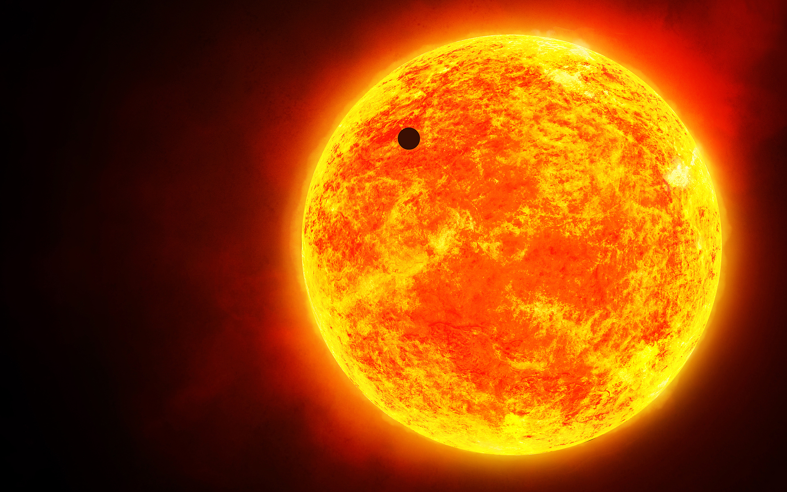

O antes !
Venha se aventurar em historias magnificas.
SOL
O Sol é uma estrela localizada no centro do sistema solar e é essencial para a existência de vida na Terra. É uma estrela do tipo espectral G, classificada como uma anã amarela. Sua massa é cerca de 333 mil vezes a massa da Terra, e seu diâmetro é aproximadamente 109 vezes o diâmetro da Terra.
Composto principalmente de hidrogênio e hélio, o Sol gera energia através do processo de fusão nuclear em seu núcleo. A pressão e temperatura extremas no núcleo permitem a fusão de átomos de hidrogênio para formar hélio, liberando grande quantidade de energia.